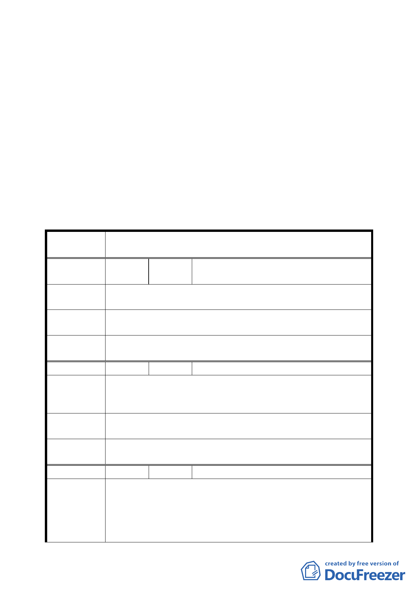

開發股份有限公司捐地 10％採自願捐獻代金買回土地，則為
容積率 247％。」
三、94 年 12 月 27 日專案小組審查會議結論有關「自走式進出通
道」修正為「自走式匝道」。
四、都市設計管制準則增列：開發單位應考量設置垃圾處理車輛
停等空間。
五、其餘依專案小組審查結論修正通過。
六、公民或團體所提意見審決如後附綜理表。
臺北市都市計畫委員會公民或團體所提意見綜理表
案
名
變更臺北市內湖區西湖段 1 小段 256、272、276 等 3 筆地號
工業區土地為住宅區主要計畫案
編
號１
陳情人
馬興華先生（西湖美人社區管委會）
王興國先生 西康里里長
建 議 辦 法 仍維持原都市計畫用途—工二，「不同意變更」。
專
審
案
查
小
結
組
論
有關本案土地使用分區維持原公展計畫。
委
決
員
會
議
依專案小組審查結論辦理。
編 號 2 陳情人 王興國先生 西康里里長
一、北勢湖工業區，須一併通盤檢討、變更。
建 議 辦 法 二、本里反對變更為住三用地。
專 案 小 組 一、有關北勢湖工業區市府已另案辦理都市計畫相關程序。
審 查 結 論 二、有關本案土地使用分區維持原公展計畫。
委
決
員
會
議
依專案小組審查結論辦理。
編 號 3 陳情人 謝建華先生 西安里里長
一、樂見該地區終於可以就都市計劃提出討論，是應該變更
為住宅區，但必需合情、合理、合法。
陳 情 理 由 二、該基地週邊，內湖路北側工二工業區連細部計劃都沒有，
且位於國中、國小、技術學院、住宅之間，原本做為工
業區就極不合理！而今內科已成立，該地區就應如變更
一一